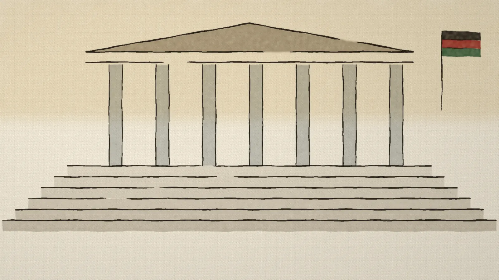

Leadership and integrity: how to judge a candidate
Lesson 5 of 8

Two candidates for MCA
Otieno’s ward has two candidates for MCA (both made up).
- Candidate A arrives in a convoy, gives out T-shirts and KES 200 notes, and promises “development”.
- Candidate B has no convoy. She held two meetings about the ward’s budget last year and can name the three projects in the county budget for the ward, and what each one costs.
Who’ll be the better MCA? The Constitution doesn’t tell you who to vote for. But it does give you a measuring stick. It’s called Chapter Six: Leadership and Integrity.
The big idea: serve, don’t rule
Article 73 says the power given to a leader is a public trust. It must be used in a way that shows respect for the people, brings honour to the nation and dignity to the office, and promotes public confidence in it.
And the line worth memorising: it gives the leader “the responsibility to serve the people, rather than the power to rule them” (Art 73(1)(b)).
The guiding principles of leadership are (Art 73(2)):
- Chosen for integrity, competence and suitability, or elected in free and fair elections.
- Fair decisions, not influenced by nepotism, favouritism, other improper motives or corruption.
- Selfless service in the public interest: honesty, and declaring any personal interest that could conflict with public duties.
- Accountability to the public for decisions and actions.
- Discipline and commitment in serving the people.
These sit on top of the national values that bind every leader and public officer: among them the rule of law, democracy and participation of the people, human dignity, equality, good governance, integrity, transparency and accountability (Art 10).
The rules every State officer must follow
Everyone on your ballot is a State officer: the President, MPs, Senators, the Woman Member, Governors and MCAs (Art 260, “State office”). Chapter Six says:
| Rule | Article |
|---|---|
| Avoid any conflict between personal interests and public duties, in public and in private life | 75(1) |
| Don’t put a personal interest above a public one, and don’t demean the office | 75(1) |
| A gift given on a public or official occasion belongs to the Republic, not the officer, unless an Act says otherwise | 76(1) |
| No bank account outside Kenya, except as an Act allows | 76(2)(a) |
| No personal loan or benefit that compromises integrity | 76(2)(b) |
| A full-time State officer can’t take other paid work | 77(1) |
| Only a citizen can hold a State office; a State officer can’t hold dual citizenship (with some exceptions) | 78 |
The punishment that bites: a person dismissed or removed from office for breaking these rules can’t hold any other State office (Art 75(3)).
Who enforces it? The Ethics and Anti-Corruption Commission (EACC), set up under Art 79.
Who can’t stand at all
The Constitution bars some people from being elected. For MPs, Senators and Woman Members (Art 99(2)), a person can’t stand if they:
- are a State officer or public officer (other than a sitting MP);
- were an IEBC member in the last five years;
- haven’t been a citizen for the last ten years;
- are a member of a county assembly;
- are of unsound mind, or an undischarged bankrupt;
- are serving a prison sentence of at least six months; or
- have been found, under a law, to have misused or abused a State or public office, or broken Chapter Six.
MCAs have nearly the same list (Art 193(2)). A Governor must be eligible to be an MCA (Art 180(2)). A presidential candidate must also be a citizen by birth, must not owe allegiance to a foreign state, and needs the nominations of at least 2,000 voters in each of a majority of the counties (Art 137).
One important fairness rule: a person is not disqualified until all appeals are finished (Art 99(3), 193(3)). An accusation is not a conviction.
To stand as an independent (without a party), a candidate needs the support of at least 1,000 registered voters in the constituency for MP, 2,000 in the county for Senator (Art 99(1)(c)), and 500 in the ward for MCA (Art 193(1)(c)).
How to judge a candidate: a checklist
Use these at a baraza, on a radio call-in, or when someone comes to your door.
About integrity (Chapter Six)
- Has any court or official body found you misused public money or broke Chapter Six?
- What businesses do you or your family own? Do any of them do business with the government?
- Will you publish how you voted, and what you did with any fund you control?
About the job (see Lesson 6)
- MCA: “What’s in the county budget for this ward? Will you hold a meeting on it before you vote?”
- Governor: “How will you pay suppliers the county already owes? Will you publish every county tender?”
- Senator: “What did you do about the last Auditor-General’s report on our county?”
- MP and Woman Member: “How did you vote on the last Finance Bill, and why?”
- President: “How much will you borrow, and what for? Will counties get their full share on time?”
About how they campaign
- Are they handing out money? (That’s a crime: Lesson 3.)
- Do they speak about other communities with respect?
- Do they answer questions, or only make speeches?
Back to Otieno’s ward. Candidate B can tell him what the job is and show what she did. Candidate A is offering a loan disguised as a gift (Lesson 3). The Constitution’s measuring stick points one way. The ballot is still Otieno’s.
What you can do
- Look up a candidate’s record. Court cases are public on kenyalaw.org. MPs’ speeches and votes are recorded in Parliament’s Hansard at parliament.go.ke.
- Ask the checklist questions in public, so others hear the answers.
- Judge the record, not the gifts.
- Report, don’t just complain, when a leader uses office for private gain.
Where to go
| If… | Go to |
|---|---|
| A leader is using office for private gain, or breaking Chapter Six | EACC: toll free 1551, report@integrity.go.ke, report online |
| A candidate may not be qualified to stand | IEBC: (020) 2877000, info@iebc.or.ke |
| A government office refuses you information about a project or tender | Ombudsman (CAJ): toll free 0800 221 349 |
Full details are in WHERE-TO-GO.md.
Quick quiz
- Complete the quote from Art 73: the leader has “the responsibility to serve the people, rather than…”
- An MCA receives a cow as a gift at an official ward function. Whose cow is it?
- A governor is dismissed from office for breaking the conflict-of-interest rule in Article 75. Can they run for Senator?
- A candidate was charged with corruption but the case is still in court. Is he disqualified?
- How many supporters does an independent candidate for MCA need?
Answers
- ”…the power to rule them” (Art 73(1)(b)).
- The Republic’s, unless an Act exempts it (Art 76(1)).
- No. A person removed for breaking Article 75 (or 76, 77 or 78(2)) can’t hold any other State office, and a Senator is a State officer (Art 75(3), 260).
- No. A person isn’t disqualified until all appeals or reviews are finished (Art 99(3), 193(3)).
- At least 500 registered voters in the ward (Art 193(1)(c)(ii)).